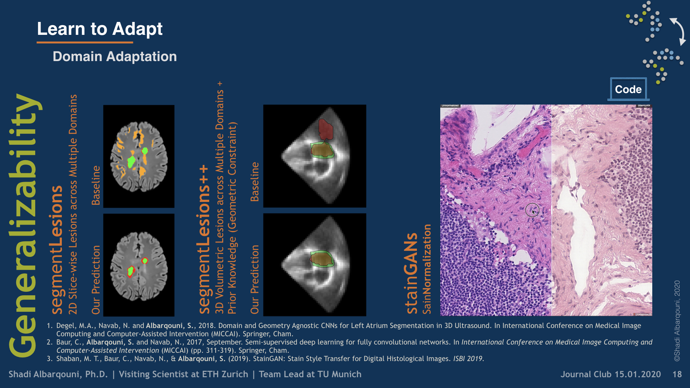
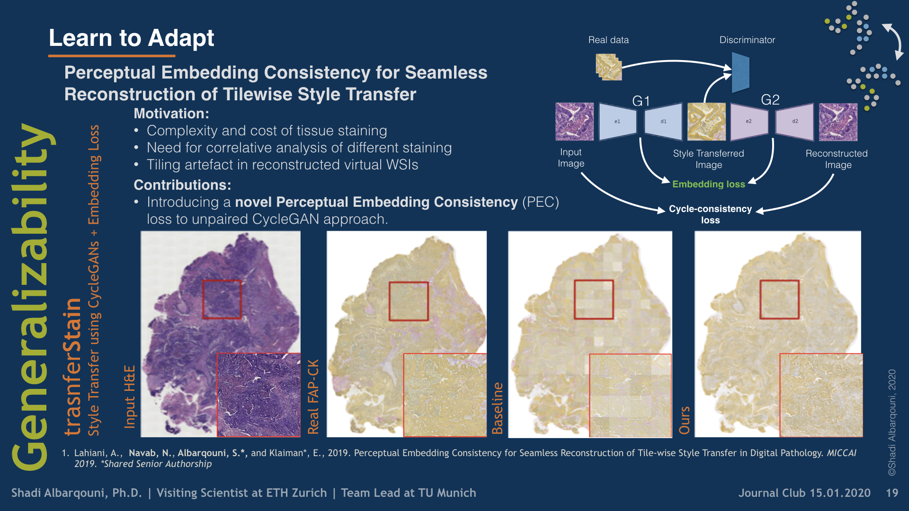

Learn to Adapt
 Illustrative figure by Shadi Albarqouni
Illustrative figure by Shadi Albarqouni
To build domain-agnostic models that are generalizable to a different domain, i.e., scanners, we have investigated three directions; First, Style Transfer, where the style/color of the source domain is transferred to match the target one. Such style transfer is performed in the high-dimensional image space using adversarial learning, as shown in our papers on Histology Imaging (Lahiani et al. 2019a, Lahiani et al. 2019b, Shaban et al. 2019). Second, Domain Adaptation, where the distance between the features of the source and target domains are minimized. Such distance can be optimized in a supervised fashion, i.e., class aware, using angular cosine distance as shown in our paper on MS Lesion Segmentation in MR Imaging (Baur et al. 2017), or in an unsupervised way, i.e., class agnostic, using adversarial learning as explained in our article on Left atrium Segmentation in Ultrasound Imaging (Degel et al. 2018). Yet, another exciting direction that has been recently investigated in our paper (Lahiani et al. 2019c) is to disentangle the feature that is responsible for the style and color from the one responsible for the semantics.


Collaboration:
- Eldad Klaiman, Roche Diagnostics GmbH
- Georg Schummers and Matthias Friedrichs, TOMTEC Imaging Systems GmbH
Shadi Albarqouni
Visiting Scientist @ ETH Zürich | Senior Research Scientist and Team Lead @ TU Munich
Publications

Fairness by Learning Orthogonal Disentangled Representations
Learning discriminative powerful representations is a crucial step for machine learning systems. Introducing invariance against arbitrary nuisance or sensitive attributes while performing well on specific tasks is an important problem in representation learning. This is mostly approached by purging the sensitive information from learned representations. In this paper, we propose a novel disentanglement approach to invariant representation problem. We disentangle the meaningful and sensitive representations by enforcing orthogonality constraints as a proxy for independence. We explicitly enforce the meaningful representation to be agnostic to sensitive information by entropy maximization. The proposed approach is evaluated on five publicly available datasets and compared with state of the art methods for learning fairness and invariance achieving the state of the art performance on three datasets and comparable performance on the rest. Further, we perform an ablative study to evaluate the effect of each component.

ROAM: Random Layer Mixup for Semi-Supervised Learning in Medical Imaging
Medical image segmentation is one of the major challenges addressed by machine learning methods. Yet, deep learning methods profoundly depend on a huge amount of annotated data which is time-consuming and costly. Though semi-supervised learning methods approach this problem by leveraging an abundant amount of unlabeled data along with a small amount of labeled data in the training process. Recently, MixUp regularizer [32] has been successfully introduced to semi-supervised learning methods showing superior performance [3]. MixUp augments the model with new data points through linear interpolation of the data at the input space. In this paper, we argue that this option is limited, instead, we propose ROAM, a random layer mixup, which encourages the network to be less confident for interpolated data points at randomly selected space. Hence, avoids over-fitting and enhances the generalization ability. We validate our method on publicly available datasets on whole-brain image segmentation (MALC) achieving state-of-the-art results in fully supervised (89.8%) and semi-supervised (87.2%) settings with relative improvement up to 2.75% and 16.73%, respectively.
Seamless Virtual Whole Slide Image Synthesis and Validation Using Perceptual Embedding Consistency
Stain virtualization is an application with growing interest in digital pathology allowing simulation of stained tissue images thus saving lab and tissue resources. Thanks to the success of Generative Adversarial Networks (GANs) and the progress of unsupervised learning, unsupervised style transfer GANs have been successfully used to generate realistic, clinically meaningful and interpretable images. The large size of high resolution Whole Slide Images (WSIs) presents an additional computational challenge. This makes tilewise processing necessary during training and inference of deep learning networks. Instance normalization has a substantial positive effect in style transfer GAN applications but with tilewise inference, it has the tendency to cause a tiling artifact in reconstructed WSIs. In this paper we propose a novel perceptual embedding consistency (PEC) loss forcing the network to learn color, contrast and brightness invariant features in the latent space and hence substantially reducing the aforementioned tiling artifact. Our approach results in more seamless reconstruction of the virtual WSIs. We validate our method quantitatively by comparing the virtually generated images to their corresponding consecutive real stained images.We compare our results to state-of-the-art unsupervised style transfer methods and to the measures obtained from consecutive real stained tissue slide images. We demonstrate our hypothesis about the effect of the PEC loss by comparing model robustness to color, contrast and brightness perturbations and visualizing bottleneck embeddings. We validate the robustness of the bottleneck feature maps by measuring their sensitivity to the different perturbations and using them in a tumor segmentation task. Additionally, we propose a preliminary validation of the virtual staining application by comparing interpretation of 2 pathologists on real and virtual tiles and inter-pathologist agreement.
Perceptual Embedding Consistency for Seamless Reconstruction of Tilewise Style Transfer
Style transfer is a field with growing interest and use cases in deep learning. Recent work has shown Generative Adversarial Networks(GANs) can be used to create realistic images of virtually stained slide images in digital pathology with clinically validated interpretability. Digital pathology images are typically of extremely high resolution, making tilewise analysis necessary for deep learning applications. It has been shown that image generators with instance normalization can cause a tiling artifact when a large image is reconstructed from the tilewise analysis. We introduce a novel perceptual embedding consistency loss significantly reducing the tiling artifact created in the reconstructed whole slide image (WSI). We validate our results by comparing virtually stained slide images with consecutive real stained tissue slide images. We also demonstrate that our model is more robust to contrast, color and brightness perturbations by running comparative sensitivity analysis tests.

Staingan: Stain style transfer for digital histological images
Digitized Histological diagnosis is in increasing demand. However, color variations due to various factors are imposing obstacles to the diagnosis process. The problem of stain color variations is a well-defined problem with many proposed solutions. Most of these solutions are highly dependent on a reference template slide. We propose a deep-learning solution inspired by cycle consistency that is trained end-to-end, eliminating the need for an expert to pick a representative reference slide. Our approach showed superior results quantitatively and qualitatively against the state of the art methods. We further validated our method on a clinical use-case, namely Breast Cancer tumor classification, showing 16% increase in AUC
Virtualization of tissue staining in digital pathology using an unsupervised deep learning approach
Histopathological evaluation of tissue samples is a key practice in patient diagnosis and drug development, especially in oncology. Historically, Hematoxylin and Eosin (H&E) has been used by pathologists as a gold standard staining. However, in many cases, various target specific stains, including immunohistochemistry (IHC), are needed in order to highlight specific structures in the tissue. As tissue is scarce and staining procedures are tedious, it would be beneficial to generate images of stained tissue virtually. Virtual staining could also generate in-silico multiplexing of different stains on the same tissue segment. In this paper, we present a sample application that generates FAP-CK virtual IHC images from Ki67-CD8 real IHC images using an unsupervised deep learning approach based on CycleGAN. We also propose a method to deal with tiling artifacts caused by normalization layers and we validate our approach by comparing the results of tissue analysis algorithms for virtual and real images.

Domain and geometry agnostic CNNs for left atrium segmentation in 3D ultrasound
Segmentation of the left atrium and deriving its size can help to predict and detect various cardiovascular conditions. Automation of this process in 3D Ultrasound image data is desirable, since manual delineations are time-consuming, challenging and observer-dependent. Convolutional neural networks have made improvements in computer vision and in medical image analysis. They have successfully been applied to segmentation tasks and were extended to work on volumetric data. In this paper we introduce a combined deep-learning based approach on volumetric segmentation in Ultrasound acquisitions with incorporation of prior knowledge about left atrial shape and imaging device. The results show, that including a shape prior helps the domain adaptation and the accuracy of segmentation is further increased with adversarial learning.

Semi-supervised deep learning for fully convolutional networks
Deep learning usually requires large amounts of labeled training data, but annotating data is costly and tedious. The framework of semi-supervised learning provides the means to use both labeled data and arbitrary amounts of unlabeled data for training. Recently, semi-supervised deep learning has been intensively studied for standard CNN architectures. However, Fully Convolutional Networks (FCNs) set the state-of-the-art for many image segmentation tasks. To the best of our knowledge, there is no existing semi-supervised learning method for such FCNs yet. We lift the concept of auxiliary manifold embedding for semi-supervised learning to FCNs with the help of Random Feature Embedding. In our experiments on the challenging task of MS Lesion Segmentation, we leverage the proposed framework for the purpose of domain adaptation and report substantial improvements over the baseline model.
Structure-preserving color normalization and sparse stain separation for histological images
Automated image processing and quantification are increasingly gaining attention in the field of digital pathology. However, a common problem that encumbers computerized analysis is the color variation in histology, due to the use of different microscopes/scanners, or inconsistencies in tissue preparation. In this paper, we present a novel color normalization technique to bring a histological image (source image) into a different color appearance of a second image (target image), which therefore standardizes the color representation of both images. In particular, by incorporating biological stain-sparse regularized stain separation, our color normalization technique preserves the structural information of the source image after color normalization, which is very important for subsequent image analysis. Both qualitative and quantitative validation demonstrates the superior performance of our stain separation and color normalization techniques.